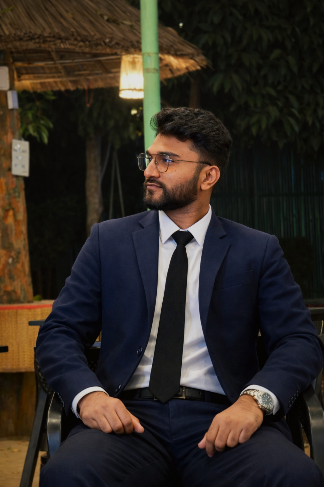

I am an active game developer passionate about building new gameplay systems, experimenting with programming technologies, and creating interactive player experiences.
📍 Khulna, Bangladesh
✉ m.tammim8207@gmail.com
A strategic tower defense experience where players deploy, upgrade, and optimize towers to eliminate waves of incoming enemies before they reach the base. Focused on balance, enemy AI movement, and progressive difficulty scaling.
A reflex‑based survival game where the player must dodge continuously spawning obstacle blocks. Designed around timing precision, movement control, and increasing speed challenges.
A multiplayer survival MMORPG built on the Roblox platform featuring exploration systems, cooperative gameplay, progression mechanics, and persistent world interaction.
2023 – Ongoing
Undergraduate program focused on software engineering, programming, and game development.
Completed in 2022
Completed in 2020
Currently studying Computer Science & Engineering and focused on game development, gameplay scripting, and software engineering. Actively building projects and expanding my technical stack.